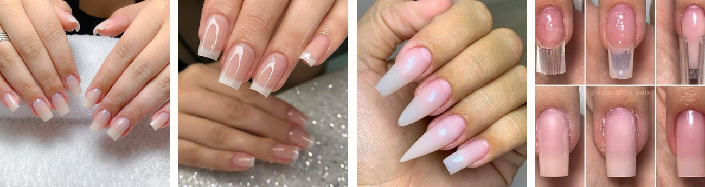

Fiberglass

Fiberglass nails are nothing new. In fact, they’ve been around for decades.
But while they may have been around for a long time, fiberglass nails aren’t quite as popular as their acrylic nails, SNS and shellac relatives.
What are fiberglass nails?
Fiberglass nails, also known as silk wraps, involves the use of thin, flexible products made from silk, fiberglass or other fabrics.
Fiberglass nails are thin wraps applied to the nail for extra reinforcement. Silk wraps can be used as a natural nail coating or they can even be embedded within acrylic nails for extra strength and reinforcement.
Fiberglass nails and silk wraps are both applied the same way – the only difference between the two is the type of fabric used for the nail reinforcement. While silk appears less noticeable, fiberglass tends to be slightly stronger.
How are fiberglass nails different to acrylic nails?
So what’s the difference between fiberglass nails and other techniques, like acrylic nails and SNS?
Fiberglass nails are traditionally much thinner than acrylic or SNS and are thus much more natural looking. But while thin nails can look more natural, they are less durable than other types of nail enhancements.
Acrylic nails are thick and rigid while fiberglass nails and wraps are flexible and can easily break down in water over time. For this reason, fiberglass nails aren’t suitable for those who are required to wash their hands frequently, as lifting can occur.
However, wraps and fiberglass are also generally considered to be less damaging than their counterparts.
Fiberglass is actually meant to be less damaging to the natural nails than other methods such as SNS or acrylics. As they are less damaging, wraps are also recommended to clients looking to grow out their natural nails.
Learn more about how to apply them here:
What are the advantages and disadvantages of fiberglass nails?
As with all nail enhancements, fiberglass nails have a number of pros and cons.
Fiberglass nails look thinner and are therefore much more natural looking.
They are also less damaging. Unlike acrylic nails, which can have a strong smell, wraps are odourless and are very unlikely to cause sensitivities or allergies.
But while nail wraps are considered less damaging and more natural looking, there are still a number of disadvantages.
They’re unfortunately far weaker than acrylics. They’re stronger than a lot of people’s natural nails, however they are much easier to break or snap than acrylics.
Fiberglass nails are not suitable for everyone either, as it’s important to have healthy nail beds and enamel to ensure a smooth application process. Biting your nails, having nails which are unable to grow or having substantially damaged nails may rule you out from getting fiberglass nails.
Irregularly shaped nails also may not be suitable. As you cannot build an arch in nail wraps, the wrap conforms to the nail’s natural shape. This means if your nails are naturally very flat, the wrap will be flat as well.
While other forms of nail enhancements can be applied at home, fiberglass nails should only be done by a professional.
The application process can be complicated, time-consuming and fiddly, making it unsuitable for home application.
How to remove fiberglass nails ?
Fiberglass nails generally require professional touch ups every two to three weeks. Fiberglass nails should be removed the same way as acrylics – by soaking in acetone.
Learn more how to remove them here: